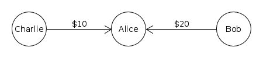
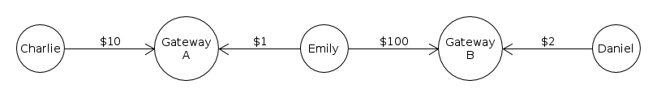

Rippling
XRP Ledgerでは、「Rippling」とは同一通貨のトラストラインを有する複数の接続当事者間での非可分なネット決済のプロセスを指しています。Ripplingは発行済み通貨の基幹的なプロセスです。Ripplingを利用すれば、同一イシュアーを信頼するユーザーは、そのイシュアーを受動的な仲介機関として発行済み残高を相互に送金できるようになります。Ripplingは、受動的かつ双方向の通貨取引オーダーのようなもので、制限がなく、通貨コードが同一でイシュアーが異なる2つの通貨間の為替レートは1:1です。
Ripplingは、支払パスでのみ発生します。XRP間の直接決済にはRipplingは使用されません。
発行アカウント以外のアカウントでは、Ripplingが望ましくない場合があります。Ripplingを使えば、他のユーザーが同一通貨のイシュアー間で債権債務を移動できるようになるためです。このため、アカウントのDefaultRippleフラグを有効にして、アカウントがデフォルトでRipplingを有効にしない限り、デフォルトではNoRippleフラグにより着信トラストラインでのRipplingが無効になっています。
注意: 別のアドレスへのトラストラインを作成する場合、そのトラストラインのあなたの側でRipplingをブロックするには、tfSetNoRippleフラグを明示的に有効にする必要があります。
Ripplingの例
「Rippling」は、支払いを行うために複数のトラストラインが調整されたときに発生します。たとえば、AliceがCharlieにお金を借りており、さらにAliceはBobからもお金を借りている場合、XRP Ledgerではトラストラインは次のようになります:

BobがCharlieに$3を支払いたい場合、BobはAliceに対して「Alice、君に貸しているお金の中から$3をCharlieに支払ってくれ。」と言えます。AliceはBobに借りているお金の一部をCharlieに送金します。最終的にはトラストラインは次のようになります。

2つのアドレスが、アドレス間のトラストライン上の残高を調整することで相互に支払うこのプロセスを「Rippling」と呼びます。これはXRP Ledgerの有用で重要な機能です。Ripplingは、同一の通貨コードを使用するトラストラインによってアドレスがリンクされている場合に起こります。イシュアーが同一でなくてもかまいません。実際、大規模なチェーンでは常にイシュアーが変更されます。
NoRippleフラグ
発行アカウント以外のアカウント、特に手数料やポリシーが異なる複数のイシュアーの残高を保有している流動性プロバイダーは、一般的に残高がRipplingされることを望みません。
「NoRipple」フラグは、トラストライン上の設定です。2つのトラストラインの両方で、同じアドレスによってNoRippleが有効に設定されている場合、第三者からの支払を、これらのトラストラインでこのアドレスを通じて「Rippling」することはできません。これにより、同一通貨の複数イシュアー間で流動性プロバイダーの残高が予期せず移動されるのを防ぎます。
アカウントは1つのトラストラインでNoRippleを無効にできます。これにより、そのトラストラインを含む任意のペアを通じてのRipplingが可能になります。アカウントにてデフォルトでRipplingを有効にするには、DefaultRippleフラグを有効にします。
たとえば、Emilyが2つの異なる金融機関から発行されたお金を保有しているとします。

CharlieはDanielに支払うため、Emilyのアドレスを通じてRipplingします。たとえば、CharlieがDanielに$10を支払うとします:

この場合、CharlieやDanielと面識のないEmilyは驚く可能性があります。さらに、金融機関Aが金融機関Bよりも高い出金手数料をEmilyに請求した場合、Emilyがコストを負担することになる可能性があります。NoRippleフラグはこの状況を回避するためのフラグです。Emilyが両方のトラストラインでNoRippleフラグを設定していれば、この2つのトラストラインを使用しているEmilyのアドレスを通じて、支払がRipplingされることはありません。
例:

このように、CharlieがEmilyのアドレスを通じてRipplingし、Danielに支払うという上記のシナリオは、不可能になります。
詳細
NoRippleフラグにより特定のパスが無効になり、無効になったパスは支払に使用できなくなります。パスが無効であると見なされるのは、パスが、あるアドレスに対してNoRippleが有効となっているトラストラインを通じて、そのアドレスノードに入りかつそのノードから出た場合に限られます。

DefaultRippleフラグ
DefaultRippleフラグは、デフォルトで着信トラストラインでのRipplingを有効にするアカウント設定です。ゲートウェイやその他の通貨イシュアーは、顧客が通貨を相互に送金できるようにするには、このフラグを有効にする必要があります。
アカウントのDefaultRipple設定は、他者があなたに対してオープンしたトラストラインにのみ影響し、あなたが作成するトラストラインには影響しません。アカウントのDefaultRipple設定を変更する場合、変更前に作成したトラストラインでは既存のNoRipple設定が維持されます。アドレスの新しいデフォルトに合わせてトラストラインのNoRipple設定を変更するには、TrustSetトランザクションを使用します。
詳細は、「XRP Ledgerゲートウェイの開設」のDefaultRippleを参照してください。
NoRippleを使用する
NoRippleを有効/無効にする
トラストライン上のNoRippleフラグは、トラストライン上のアドレスの残高がプラスまたはゼロの場合に限り、有効にできます。これにより、この機能を悪用してトラストラインの残高に示される債務を不履行にすることができなくなります。（ただし、アドレスを放棄すれば債務を不履行にできます。）
rippled APIでNoRippleフラグを有効にするには、tfSetNoRippleフラグを設定したTrustSetトランザクションを送信します。NoRippleを無効にする（Ripplingを有効にする）には、tfClearNoRippleフラグを使用します。
RippleAPIでNoRippleフラグを有効にするには、トラストラインのripplingDisabled フィールドをtrueに設定してTrustlineトランザクションを送信します。
NoRippleステータスの確認
相互に信頼し合っている2つのアカウントの場合、NoRippleフラグはアカウントごとに管理されます。
rippled APIでアドレスに関連付けられているトラストラインを確認するには、account_linesメソッドを使用します。各トラストラインのno_rippleフィールドには、現在のアドレスがそのトラストラインに対してNoRippleフラグを有効にしているか否かが表示され、no_ripple_peerフィールドには、取引相手がNoRippleフラグを有効にしているか否かが表示されます。
RippleAPIでアドレスに関連付けられているトラストラインを確認するには、getTrustlinesメソッドを使用します。各トラストラインのripplingDisabledフィールドには、現在のアドレスがそのトラストラインに対してNoRippleフラグを有効にしているか否かが表示され、counterparty.ripplingDisabledフィールドには、取引相手がNoRippleフラグを有効にしているか否かが表示されます。